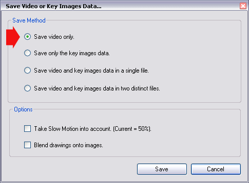
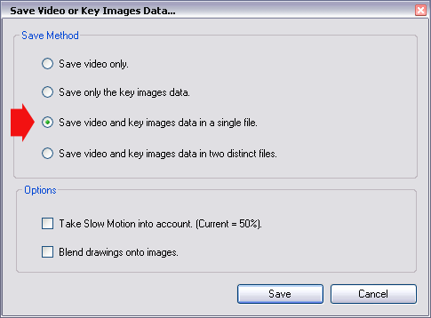

Saving Video Sequences
Saving a Video,
Formats and Codecs used,
Muxing Key Images data.
1. Saving a Video
You can save the current Working Zone at anytime into a new video.
Use the menu File > Save the Video or Key Images data...
Choose the option "Save Video only".

If you want the result video to be played at the current slow motion, check "Take slow motion into account."
From a certain level of slow motion (around 20%) the result file can become more and more heavy.
2. Formats and Codecs used
A format is an enveloppe containing compressed data of the video. The codec is a compression technique to reduce data size.
Formats used in Kinovea :
- MKV (Matroska). Default format.
It is an extremely flexible format technically speaking and with open implementations.
A fair number of third party video players will read MKV natively. (VLC, Mplayer)
For other software (Media Player Classic, Windows Media Player, etc.) you can install a dedicated filter (CCCP is recommended).
- MP4 (MPEG4-Part14).
- AVI.
Codecs used in Kinovea :
In this version, Kinovea will compress every video using a MPEG4-ASP codec. (DivX / Xvid compatible)
3. Muxing Key Images data
To ease sharing video and analysis data (Key Images, Comments, Drawings) the muxing option is provided.
Use the menu File > Save the Video or Key Images data...
Choose the option "Save video and key images data in a single file."

Key Images data are then saved alongside Images, without blending the drawings on them.
You will be able to open again the file in Kinovea and modify drawings and comments.
If you want to open the resulting file in a third party software, only the original images will show up.
Videos saved with this option will be in MKV format.